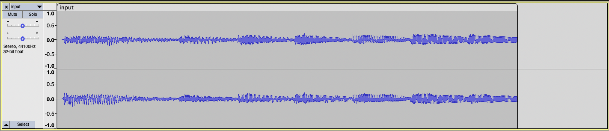

Volume

Problem to Solve
WAV files are a common file format for representing 音频. WAV files store 音频 as a sequence of “samples”: numbers that represent the value of some 音频 signal at a particular point in 时间. WAV files begin with a 44-byte “header” that contains information 关于 the file itself, including the size of the file, the number of samples per second, and the size of each sample. After the header, the WAV file contains a sequence of samples, each a single 2-byte (16-bit) integer representing the 音频 signal at a particular point in 时间.
Scaling each sample value by a given factor has the effect of changing the volume of the 音频. Multiplying each sample value by 2.0, for 示例, will have the effect of doubling the volume of the origin 音频. Multiplying each sample by 0.5, meanwhile, will have the effect of cutting the volume in half.
In a file called volume.c in a folder called volume, write a program to modify the volume of an 音频 file.
Demo
Distribution Code
For this problem, you’ll extend the functionality of code provided to you by CS50’s 工作人员.
下载 the distribution code
Log into cs50.dev, click on your terminal window, and execute cd by itself. You should find that your terminal window’s prompt resembles the below:
$
下一页 execute
wget https://cdn.cs50.net/2024/fall/psets/4/volume.zip
in order to 下载 a ZIP called volume.zip into your codespace.
Then execute
unzip volume.zip
to create a folder called volume. You no longer need the ZIP file, so you can execute
rm volume.zip
and respond with “y” followed by Enter at the prompt to remove the ZIP file you downloaded.
Now type
cd volume
followed by Enter to move yourself into (i.e., 打开) that directory. Your prompt should now resemble the below.
volume/ $
If all was successful, you should execute
ls
and see a file named volume.c. Executing code volume.c should 打开 the file where you will type your code for this 问题集. If not, retrace your steps and see if you can determine where you went wrong!
实现细节
Complete the implementation of volume.c, such that it changes the volume of a sound file by a given factor.
- The program should accept three command-line arguments. The first is
input, which represents the 姓名 of the original 音频 file. The second isoutput, which represents the 姓名 of the new 音频 file that should be generated. The third isfactor, which is the amount by which the volume of the original 音频 file should be scaled.- For 示例, if
factoris2.0, then your program should double the volume of the 音频 file ininputand save the newly generated 音频 file inoutput.
- For 示例, if
- Your program should first 阅读 the header from the input file and write the header to the output file.
- Your program should then 阅读 the rest of the data from the WAV file, one 16-bit (2-byte) sample at a 时间. Your program should multiply each sample by the
factorand write the new sample to the output file.- You 五月 assume that the WAV file will use 16-bit signed values as samples. In practice, WAV files can have varying numbers of bits per sample, but we’ll assume 16-bit samples for this problem.
- Your program, if it uses
malloc, must not leak any 内存.
提示
Understand the code in volume.c
Notice first that volume.c is already set up to take three command-line arguments, input, output, and factor.
maintakes both anint,argc, and an array ofchar *s (strings!),argv.- If
argc, the number of arguments at the command-line including the program itself, is not equal to 4, the program will print its proper usage and exit with status code 1.
int main(int argc, char *argv[])
{
// Check command-line arguments
if (argc != 4)
{
printf("Usage: ./volume input.wav output.wav factor\n");
return 1;
}
// ...
}
下一页, volume.c uses fopen to 打开 the two files provided as command-line arguments.
- It’s best practice to check if the result of calling
fopenisNULL. If it is, the file wasn’t found or wasn’t able to be opened.
// Open files and determine scaling factor
FILE *input = fopen(argv[1], "r");
if (input == NULL)
{
printf("Could not open file.\n");
return 1;
}
FILE *output = fopen(argv[2], "w");
if (output == NULL)
{
printf("Could not open file.\n");
return 1;
}
Later, these files are closed with fclose. Whenever you call fopen, you should later call fclose!
// Close files
fclose(input);
fclose(output);
Before closing the files, though, notice that we have a few TODOs.
// TODO: Copy header from input file to output file
// TODO: Read samples from input file and write updated data to output file
Odds are you’ll need to know the factor by which to scale the volume, hence why volume.c already converts the third command-line argument to a float for you!
float factor = atof(argv[3]);
Copy WAV header from input file to output file
Your first TODO is to copy the WAV file header from input and write it to output. First, though, you’ll need to learn 关于 a few special data types.
So far, we’ve seen a number of different types in C, including int, bool, char, double, float, and long. However, inside a header file called stdint.h are the declarations of a number of other types that allow us to very precisely define the size (in bits) and sign (signed or unsigned) of an integer. Two types in particular will be useful to us when working with WAV files:
uint8_tis a type that stores an 8-bit (hence8!) unsigned (i.e., not negative) integer (henceuint!). We can treat each byte of a WAV file’s header as auint8_tvalue.int16_tis a type that stores a 16-bit signed (i.e., positive or negative) integer. We can treat each sample of 音频 in a WAV file as anint16_tvalue.
You’ll likely want to create an array of bytes to store the data from the WAV file header that you’ll 阅读 from the input file. Using the uint8_t type to represent a byte, you can create an array of n bytes for your header with syntax like
uint8_t header[n];
replacing n with the number of bytes. You can then use header as an argument to fread or fwrite to 阅读 into or write from the header.
Recall that a WAV file’s header is always exactly 44 bytes long. 笔记 that volume.c already defines a variable for you called HEADER_SIZE, equal to the number of bytes in the header.
The below is a pretty big 提示, but here’s how you could accomplish this TODO!
// Copy header from input file to output file
uint8_t header[HEADER_SIZE];
fread(header, HEADER_SIZE, 1, input);
fwrite(header, HEADER_SIZE, 1, output);
Write updated data to output file
Your 下一页 TODO is to 阅读 samples from input, update those samples, and write the updated samples to output. When reading files, it’s common to create a “buffer” in which to temporarily store data. There, you can modify the data and—once it’s ready—write the buffer’s data to a new file.
Recall that we can use the int16_t type to represent a sample of a WAV file. To store an 音频 sample, then, you can create a buffer variable with syntax like:
// Create a buffer for a single sample
int16_t buffer;
With a buffer for samples in place, you can now 阅读 data into it, one sample at a 时间. Try using fread for this task! You can use &buffer, the address of buffer, as an argument to fread or fwrite to 阅读 into or write from the buffer. (Recall that the & operator is used to get the address of the variable.)
// Create a buffer for a single sample
int16_t buffer;
// Read single sample into buffer
fread(&buffer, sizeof(int16_t), 1, input);
Now, to increase (or decrease) the volume of a sample, you need only multiply it by some factor.
// Create a buffer for a single sample
int16_t buffer;
// Read single sample into buffer
fread(&buffer, sizeof(int16_t), 1, input);
// Update volume of sample
buffer *= factor;
And finally, you can write that updated sample to output:
// Create a buffer for a single sample
int16_t buffer;
// Read single sample from input into buffer
fread(&buffer, sizeof(int16_t), 1, input);
// Update volume of sample
buffer *= factor;
// Write updated sample to new file
fwrite(&buffer, sizeof(int16_t), 1, output);
There’s just one problem: you’ll need to continue reading a sample into your buffer, updating its volume, and writing the updated sample to the output file while there are still samples left to 阅读.
- Thankfully, per its documentation,
freadwill return the number of items of data successfully 阅读. You 五月 find this useful to check for when you’ve reached the end of the file! - Keep in mind there’s no reason you can’t call
freadinside of awhileloop’s conditional. You could, for 示例, make a call tofreadlike the following:while (fread(...)) { }
It’s quite the 提示, but see the below for an efficient way to solve this problem:
// Create a buffer for a single sample
int16_t buffer;
// Read single sample from input into buffer while there are samples left to read
while (fread(&buffer, sizeof(int16_t), 1, input) != 0)
{
// Update volume of sample
buffer *= factor;
// Write updated sample to new file
fwrite(&buffer, sizeof(int16_t), 1, output);
}
Because the version of C you’re using treats non-zero values as true and zero values as false, you could simplify the above syntax to the following:
// Create a buffer for a single sample
int16_t buffer;
// Read single sample from input into buffer while there are samples left to read
while (fread(&buffer, sizeof(int16_t), 1, input))
{
// Update volume of sample
buffer *= factor;
// Write updated sample to new file
fwrite(&buffer, sizeof(int16_t), 1, output);
}
Walkthrough
Not sure how to solve?
How to Test
Your program should behave per the 示例 below.
$ ./volume input.wav output.wav 2.0
When you listen to output.wav (as by control-clicking on output.wav in the file browser, choosing 下载, and then opening the file in an 音频 player on your computer), it should be twice as loud as input.wav!
$ ./volume input.wav output.wav 0.5
When you listen to output.wav, it should be half as loud as input.wav!
Correctness
check50 cs50/problems/2024/fall/volume
Style
style50 volume.c
如何提交
Per Step 4 below, after you 提交, be sure to check your autograder results. If you see SUBMISSION ERROR: missing files (0.0/1.0), it means your file was not named exactly as prescribed (or you uploaded it to the wrong problem).
Correctness in submissions entails everything from reading the 规格说明, writing code that is compliant with it, and submitting files with the correct 姓名. If you see this error, you should resubmit right away, making sure your submission is fully compliant with the 规格说明. The 工作人员 will not adjust your filenames for you after the fact!
- 下载 your
volume.cfile by control-clicking or right-clicking on the file in your codespace’s file browser and choosing 下载. - Go to CS50’s Gradescope page.
- Click 问题集 4: Volume.
- Drag and drop your
volume.cfile to the area that says Drag & Drop. Be sure it has that exact filename! If you upload a file with a different 姓名, the autograder likely will fail when trying to run it. Ensuring you have uploaded files with the correct filename is your responsibility! - Click Upload.
You should see a message that says “问题集 4: Volume submitted successfully!”